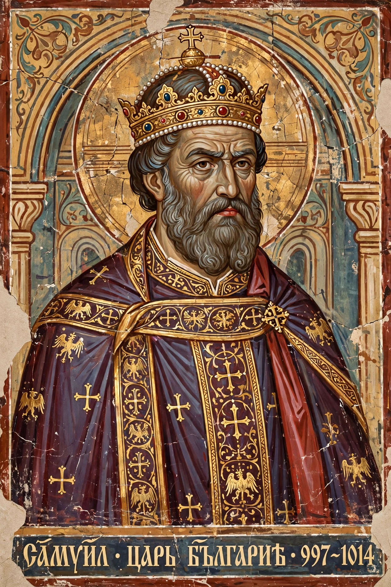

| Reign | 997 – 6 October 1014 |
|---|---|
| Predecessor | Roman of Bulgaria |
| Successor | Gavril Radomir |
| Died | 6 October 1014, near Prilep |
| Dynasty | Cometopuli |
| Father | Nicholas |
| Mother | Ripsimia |
Samuel (also Samuil; Bulgarian: Самуил) was the emperor (tsar) of the First Bulgarian Empire from 997 to his death on 6 October 1014. From 971 to 1014, as one of the four Cometopuli brothers and later as sole ruler, he directed Bulgaria's resistance against the Byzantine Empire of Basil II. His realm, centered in the southwestern lands around Prespa and Ohrid, at its height controlled most of the Balkan Peninsula outside the Byzantine coastal cities.
Samuel was the youngest son of Count Nicholas, a Bulgarian comes (count) who governed lands in Macedonia — probably Sredets (Sofia) or Vodena — and his wife Ripsimia, of Armenian descent according to the chronicler John Skylitzes. After the Byzantine emperor John I Tzimiskes captured the Bulgarian capital Preslav in 971 and carried off Tsar Boris II, the four sons of Nicholas — David, Moses, Aron, and Samuel, collectively called the Cometopuli, "the sons of the Count" — raised the western Bulgarian lands in revolt beginning in 976.
The elder brothers successively perished: David was killed by Vlach brigands in 976, Moses died besieging Serres, and Aron was executed by Samuel in 987 after being accused of treasonable dealings with Byzantium. Samuel thus became sole leader, ruling initially in the name of Roman, the surviving son of Peter I, whom he recognized as tsar after Roman's escape from Constantinople; on Roman's death in 997 Samuel was crowned emperor in his own right.
In 986 Samuel won his greatest early victory at the Battle of the Gates of Trajan, ambushing Basil II's army in the mountain passes near Ihtiman and capturing the imperial baggage train; Basil barely escaped. Samuel then extended his authority over Thessaly, Epirus, Dyrrhachium on the Adriatic, and by the late 990s over most of the Balkans, including much of the former Bulgarian heartland east of the mountains and the Serbian principality of Duklja.
From 1001 Basil II, freed from civil wars and eastern campaigns, turned the full weight of the empire against Bulgaria in annual campaigns of attrition, systematically reducing Samuel's fortresses along the Vardar valley and around Vidin, Skopje, and Vodena. Samuel responded with raids into Thrace and Greece but could not stop the erosion of his territory.
On 29 July 1014 Basil II confronted Samuel's fortified palisade in the pass of Kleidion (Clidium) on the Strumica. While the Byzantines attacked frontally, a detachment under Nikephoros Xiphias crossed the mountains and fell on the Bulgarian rear, producing a catastrophic defeat. According to Skylitzes, Basil blinded the captured Bulgarian army — traditionally numbered at 14,000 or 15,000 men — leaving every hundredth man with one eye to guide the rest home, an act that earned him the epithet "Bulgar-slayer" (Boulgaroktonos). When Samuel saw his blinded soldiers return, he is said to have collapsed and died two days later, on 6 October 1014, near Prilep.
Samuel's successors, his son Gavril Radomir (murdered 1015) and his nephew Ivan Vladislav (killed besieging Dyrrhachium in 1018), could not sustain the resistance, and in 1018 Bulgaria submitted to Basil II, ending the First Bulgarian Empire. Samuel remains a central figure of Bulgarian national history, commemorated by monuments, the town of Samuil in northeastern Bulgaria, and Samuel's Fortress at Ohrid. His historical legacy is also claimed in North Macedonia, where he is regarded as a Macedonian ruler — a point of contention in Bulgarian–Macedonian historiography. In 2014, DNA and forensic reconstruction work on remains believed to be Samuel's, held in Thessaloniki, drew renewed public attention.